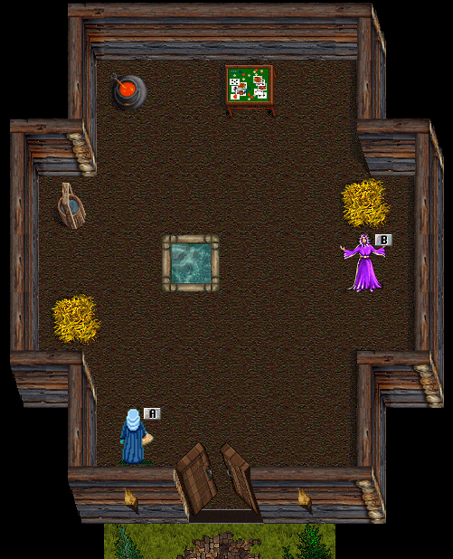

| Back To Nl | |
| Jillian | Area Information |
 |
The home of Jillian. Visit her to return to nork (Jill, nork) Or to go to green dragon hatcheries (Jill, Gdh) *Requires Gh and lvl 35* Visit Diplomat to check your current faction (Dip, graine) (Dip, Miners) (Dip, Bandits) (Dip, Nameless one) 1 to 9999 as enemy 10000 to 12999 as Neutral 13000+ as Friend Diplomat can also tell you how far you are into the progression quests. (Dip, info) t1 = Progression quests t2 = Max level you can reach t3 = Max skill you can reach |